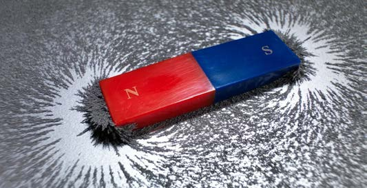

Like poles of magnets repel each other when brought close together. This is because the magnetic forces are acting against each other. On the other hand, unlike poles of the magnets attract each other. This activity proves the law of magnetism.
Experiment 1: Observing the existence of magnetic lines of force
Aim:
Identifying magnetic lines of force
Materials:
Iron filings, white paper, bar magnet, U-shaped magnet and a table
Procedure
- 1. Spread the iron filings on the white paper placed on top of the table.
- 2. Put the bar magnet on top of the paper with iron filings.
- 3. Gently shake the paper.
- What do you observe?
- 4. Observe how the iron filings are aligned and compare them with the pattern shown in Figure 4.

- 5. Using a U-shaped magnet, repeat procedure 1 - 4.
Results:
Write the results of the experiment you have conducted.
Conclusion:
Write the conclusion of the experiment you have conducted.
Experiment 2: Exploring the pattern of magnetic lines of force between like poles of magnets
Aim:
Investigating the pattern of magnetic lines of force between like poles of magnets